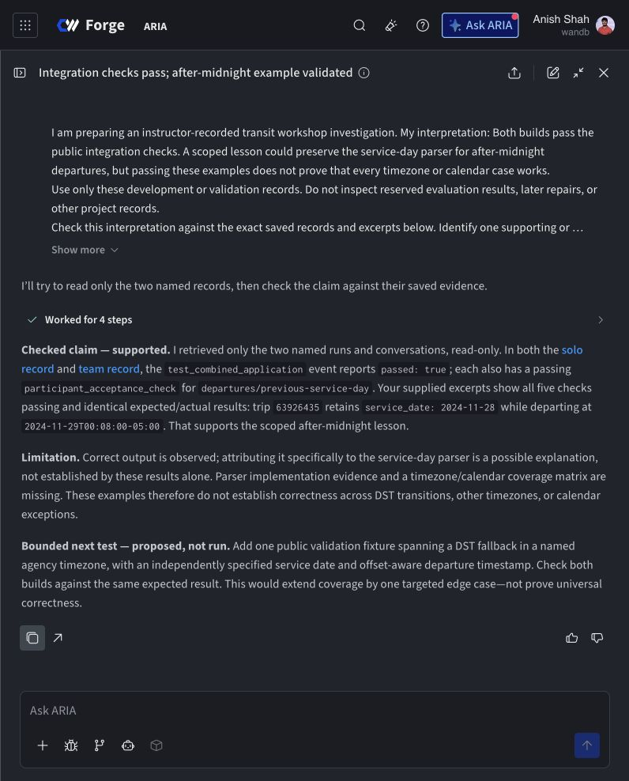
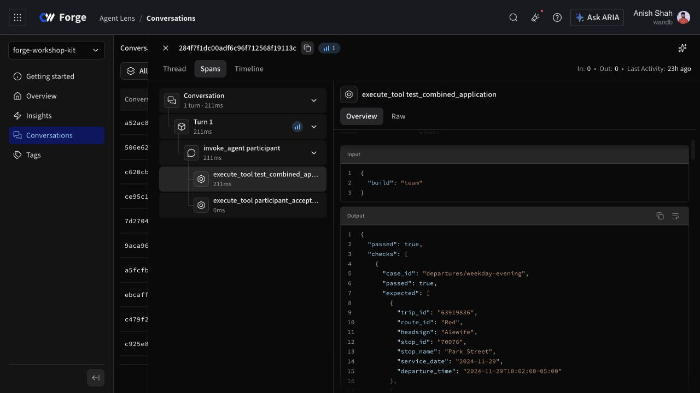

Transit Factory / Investigate this result
Recorded instructor investigation. These are saved instructor records, not the outcome of an unexecuted participant edit.
Exact URLs and public development-check excerpts; no native attachment. ARIA retrieved only the two named runs and conversations read-only, confirming combined-application and participant-acceptance checks. The detailed previous-service-day trip and timestamps were supplied excerpts. It did not inspect reserved scenarios or claim that these outputs prove parser correctness in every timezone.
Open the actual ARIA conversation · Check the supplied source values offline
Exact submitted prompt
I am preparing an instructor-recorded transit workshop investigation. My interpretation: Both builds pass the public integration checks. A scoped lesson could preserve the service-day parser for after-midnight departures, but passing these examples does not prove that every timezone or calendar case works.
Use only these development or validation records. Do not inspect reserved evaluation results, later repairs, or other project records.
Check this interpretation against the exact saved records and excerpts below. Identify one supporting or contradicting observation and cite the record, field, or event. Separate observations from possible causes; state missing evidence. Do not change code or settings, launch experiments, update project memory, or create automations. Analysis only.
Records: [{"stage_id":"467e83bf4626e7fb910763fe0d55127c","stage_name":"factory/integration/solo","trace_url":"https://forge.coreweave.com/agent-lens/wandb/forge-workshop-kit/conversations/467e83bf4626e7fb910763fe0d55127c","run_url":"https://forge.coreweave.com/wandb/wandb/forge-workshop-kit/runs/467e83bf4626e7fb910763fe0d55127c"},{"stage_id":"284f7f1dc00adf6c96f712568f19113c","stage_name":"factory/integration/team","trace_url":"https://forge.coreweave.com/agent-lens/wandb/forge-workshop-kit/conversations/284f7f1dc00adf6c96f712568f19113c","run_url":"https://forge.coreweave.com/wandb/wandb/forge-workshop-kit/runs/284f7f1dc00adf6c96f712568f19113c"}]
Saved evidence excerpts: {"factory/integration/solo":{"passed":true,"checks":[{"case_id":"departures/weekday-evening","passed":true},{"case_id":"departures/previous-service-day","passed":true},{"case_id":"departures/holiday-addition","passed":true},{"case_id":"presentation/0","passed":true},{"case_id":"presentation/1","passed":true}],"previous_service_example":{"input_case":"departures/previous-service-day","expected":[{"trip_id":"63926435","route_id":"Red","headsign":"Alewife","stop_id":"70076","stop_name":"Park Street","service_date":"2024-11-28","departure_time":"2024-11-29T00:08:00-05:00"}],"actual":[{"trip_id":"63926435","route_id":"Red","headsign":"Alewife","stop_id":"70076","stop_name":"Park Street","service_date":"2024-11-28","departure_time":"2024-11-29T00:08:00-05:00"}]}},"factory/integration/team":{"passed":true,"checks":[{"case_id":"departures/weekday-evening","passed":true},{"case_id":"departures/previous-service-day","passed":true},{"case_id":"departures/holiday-addition","passed":true},{"case_id":"presentation/0","passed":true},{"case_id":"presentation/1","passed":true}],"previous_service_example":{"input_case":"departures/previous-service-day","expected":[{"trip_id":"63926435","route_id":"Red","headsign":"Alewife","stop_id":"70076","stop_name":"Park Street","service_date":"2024-11-28","departure_time":"2024-11-29T00:08:00-05:00"}],"actual":[{"trip_id":"63926435","route_id":"Red","headsign":"Alewife","stop_id":"70076","stop_name":"Park Street","service_date":"2024-11-28","departure_time":"2024-11-29T00:08:00-05:00"}]}}}
Give a concise response with one checked claim, one limitation, and one bounded next test. If you cannot read a linked record, say so and base any interpretation explicitly on the supplied excerpt.
Please retrieve the named records read-only if the available tools support it. If they do not, state that limitation. Keep the response under 220 words.Actual ARIA response
Instructor citation check
supported: Both integrated builds pass the public previous-service-day check; the example keeps the original service day after midnight.
The saved solo and team integration results both pass departures/previous-service-day. Their matched expected and actual first departure is trip 63926435, service_date 2024-11-28, departure_time 2024-11-29T00:08:00-05:00. The native team capture confirms public integrated checks passed; the complete date values come from the supplied saved result. Passing these cases does not establish parser causality or coverage of all timezones.
Open the checked record in Forge


- Integrated team build
- Public development checks